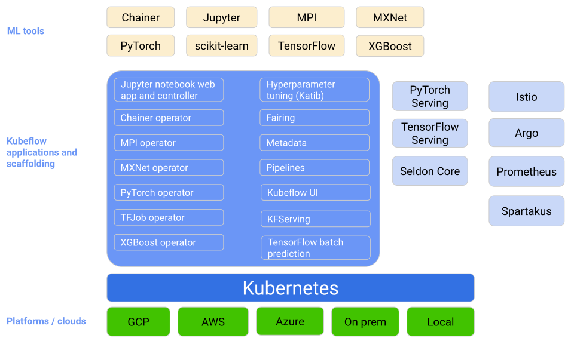

4. The ML Workflow
Machine Learning Operations
HOGENT applied
computer science
Thomas Aelbrecht & Martijn Saelens
2023-2024
The ML Workflow
Learning goals
TODO: add learning goals
Intro
Remember the ML lifecycle?

End-to-end ML Workflow

It’s complex
- Data versioning
- Labelling data
- Using notebooks
- Automating training
- Automating evaluation
- Storing models
- Serving models (i.e. deployment)
- Monitoring and logging
We focus on
TODO: aanvullen als er nog extra dingen bij komen
- Using notebooks
- Automating training
- Serving models (i.e. deployment)
- Monitoring and logging
ML pipelines
What is a pipeline?
- A sequence of steps
- Executed in a specific order
- Each step
- has a specific purpose
- has specific inputs and outputs
- can be executed in isolation
ML pipelines
Kubeflow
- Open source
- Runs on Kubernetes (likely managed)
- Make ML workflows portable and scalable
- Supports Jupyter notebooks, TensorFlow, PyTorch, etc.
Kubeflow overview

TFX
https://www.tensorflow.org/tfx/
- End-to-end platform for deploying production ML pipelines
- Manages the entire ML workflow
- Create pipelines via Python API
- Tends to be complex and buggy
- Runs on-premise or in the cloud
TFX components

Cloud ML services
- AWS SageMaker, Azure Machine Learning, Google Vertex AI
- Fully managed service
- Build, train, and deploy ML models
- Supports Jupyter notebooks, TensorFlow, PyTorch, etc.
- Vendor lock-in
Get started with the lab assignment!
Setup
TODO: aanvullen
Kubeflow lab assignment
TODO: aanvullen